10/21 Day 1 蘭州
今天一切都很順利，一切，從出發到落腳。
紙箱放進大大的計程車（到機場680元）
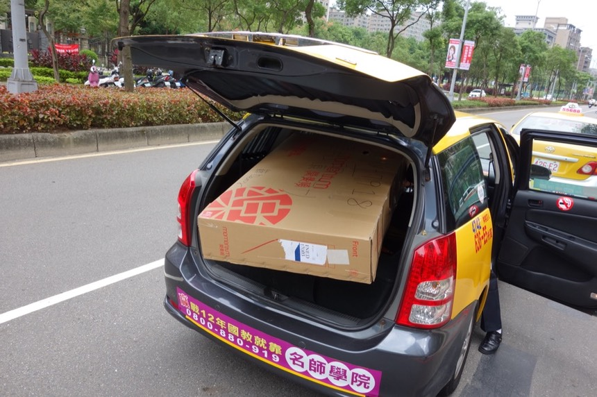
單車+紙箱+箱子內一些有的沒的東西，重量在20公斤的託運限制內（其實超過也沒關係）
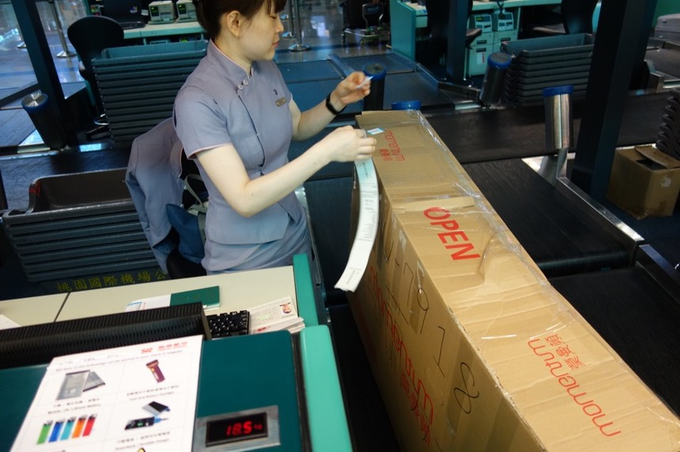
飛機準點起飛，天氣良好，沒有延誤。
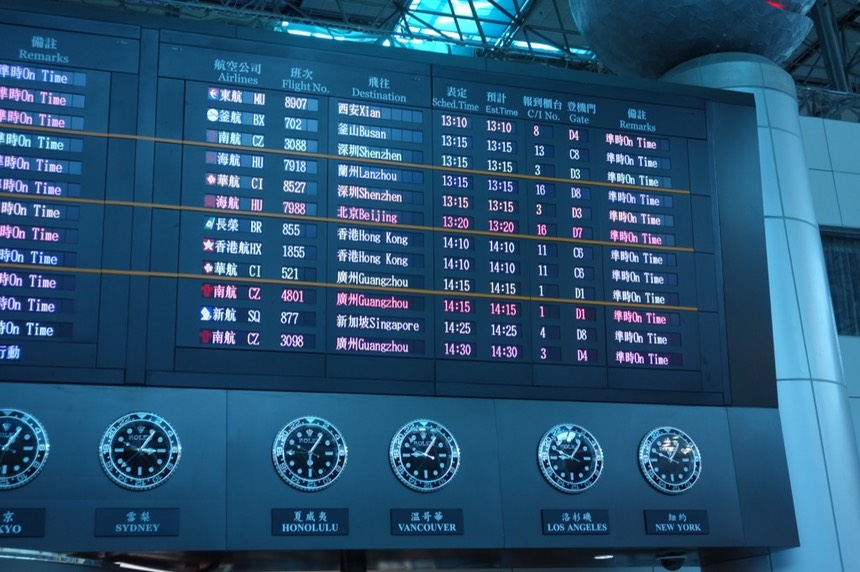
飛機劃位到逃生門那排，讓我的腳可以伸直
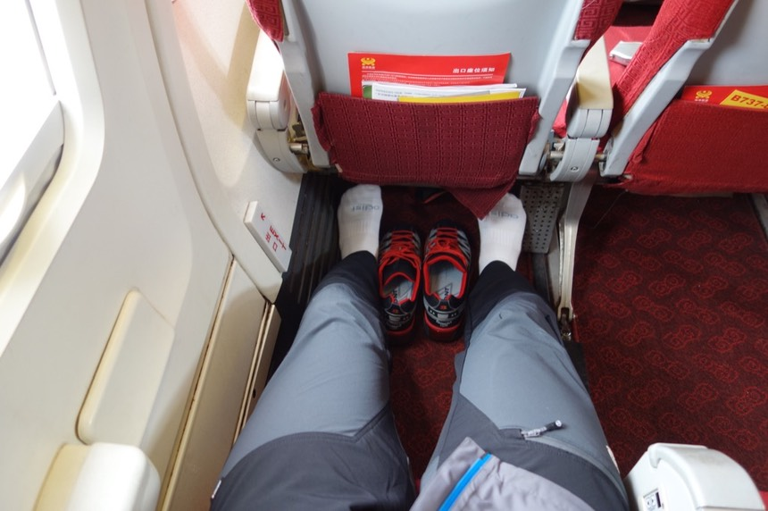
飛機餐不難吃
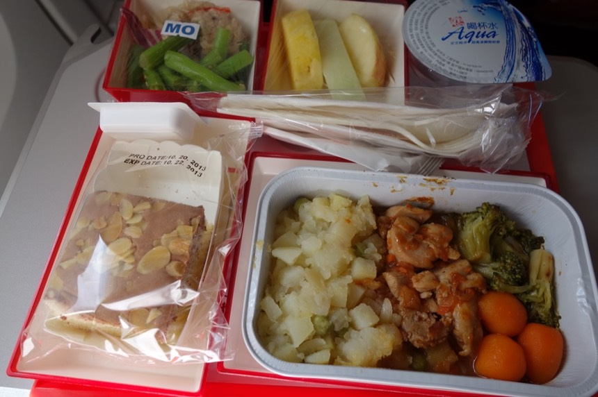
隔壁沒坐人，在廁所大排長龍前就先尿完
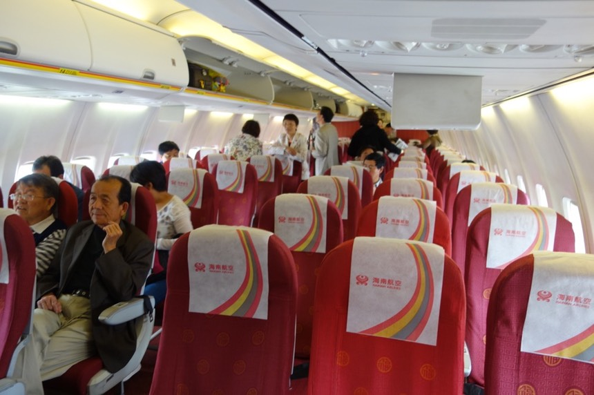
要入境的前一刻，驚覺想到GPS還放在飛機上忘了拿
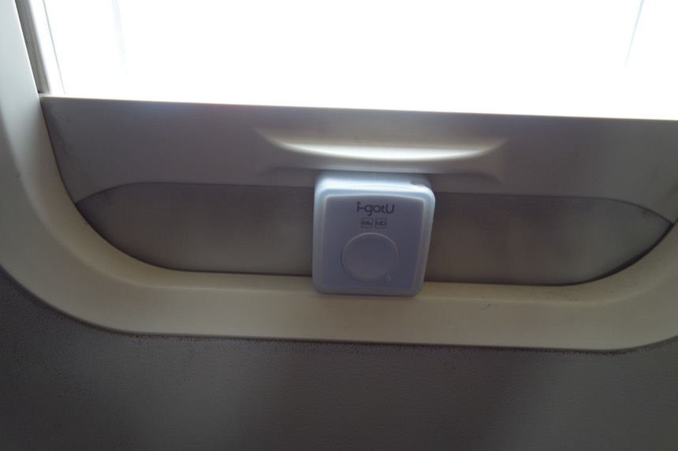
一路狂奔回去，幸好地勤讓我重上飛機（但問了很多問題）
空姐也跟我一起進去飛機找，整輛飛機已經清潔完畢，噴完了滿滿的消毒藥水。
東西還在原地，夾在窗口的小夾板上，實在太粗心了，差點新買的GPS記錄器就要在第一次使用的時候宣告失蹤。
而這一路上他也發揮了應有的功能，比如臺北>蘭州，的飛行路線是長這樣的。
雖然變成最後一個通關的，但其實一點影響也沒有，因為所有已經入境的人都還在等行李。
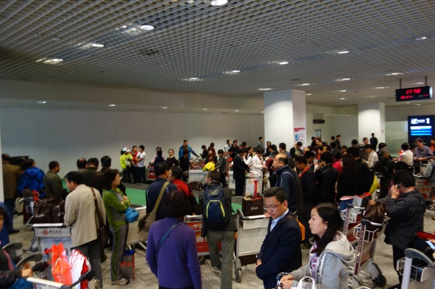
猜想自己的紙箱會因為超出尺寸，而被地勤被用手拿去哪邊讓我認領的時候
就看到紙箱成為第一件被轉出來的行李！
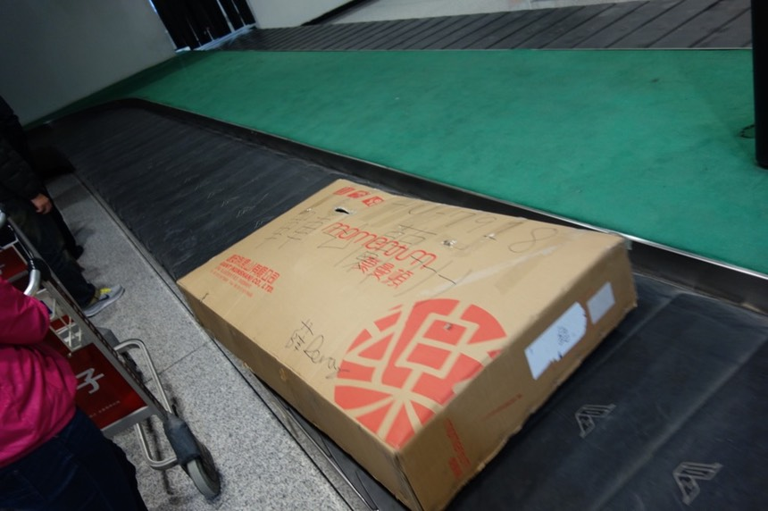
「誰買這麼大電視機呀？」某各大嬸說
拿著紙箱要出境 還會有工作人員核對行李掛牌是否一致，以免有人亂拿行李。
雖然是防盜的措施，但我真心覺得這點還不錯，可惜在大機場就難以實行了。
對中川機場沒什麼印象，因為沒有太多心思到處逛。
一出門就是一個i（詢問台）
問了大巴上車處在哪？結果就在i的隔壁
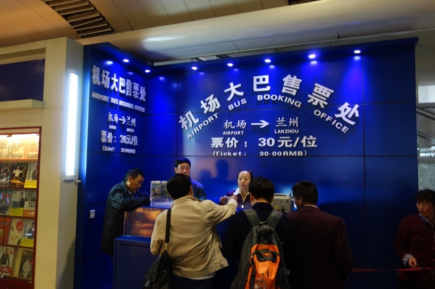
如網上查的一樣 30元/人
買完票後，一出門就看大巴停在外面，連找都不用，很方便。
而且車班不僅一小時一班（網路說的）
而是有飛機降落就會有三輛以上的大巴在等著載人進市區，完全不用怕會上不了車，或是要在機場等巴士等很久。
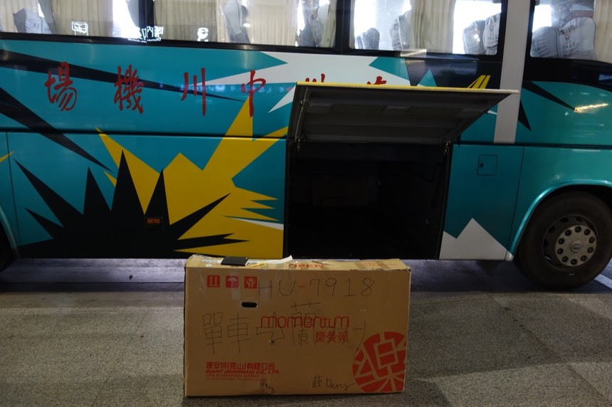
一直遲遲無法決定是在機場先把車組好，然後帶著單車進入市區（可以騎著找旅館）
還是帶著紙箱直接進市區好（可以早點進入市區，但是要帶著紙箱移動，或是要在路邊組合單車）
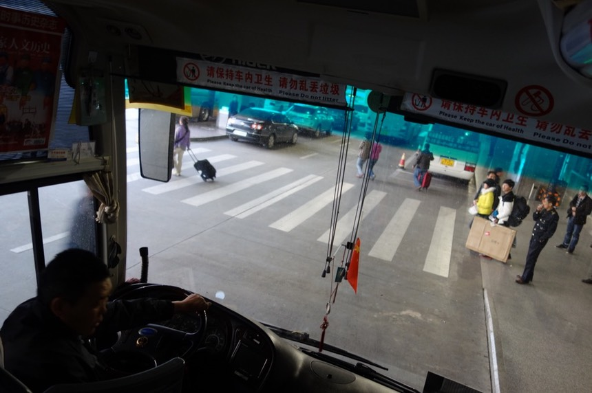
為了不想時間拖的太晚，也怕不知道下一輪的大巴是幾時？
所以還是決定先進市區再說
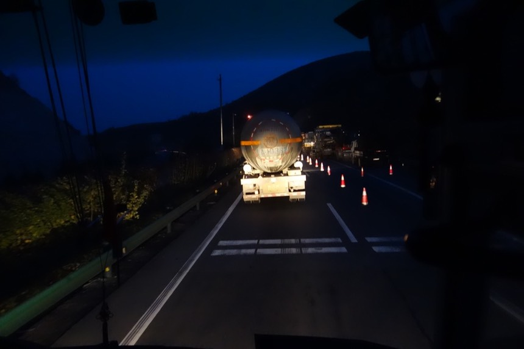
除了一小段路施工小塞之外，其餘一切順暢。
看到高速公路旁的輔路這麼爛，進市區又這麼遠。
想到自己有想過從機場開始騎車的這念頭覺得很傻。
但往西藏的路更難騎～距離更遠呀～傻子
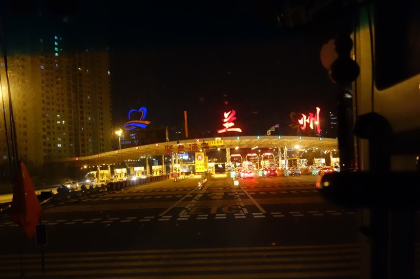
一小時車程 抵達蘭州，和我印象中已經截然不同的城市。
由於事先研究過地圖，下車後知道自己在那。
抬著18.5公斤的紙箱朝計畫中的地震招待所走去。
一方面覺得箱子很重 一方面也牽掛裡面的東西是否安好？
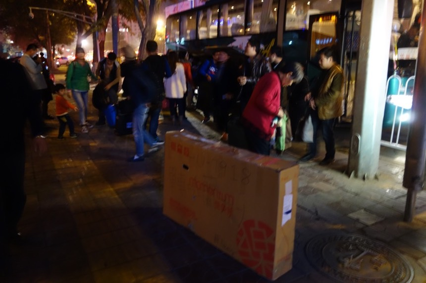
這台FCR 1陪我很久（9年）想給他取個名字
不要再用型號稱呼他
以後他的名字就叫「小喵」靈感來自我家的貓
蠻順利找到旅館，只是入口不在十字路口所標記的位置。
要抬紙箱再走一段路
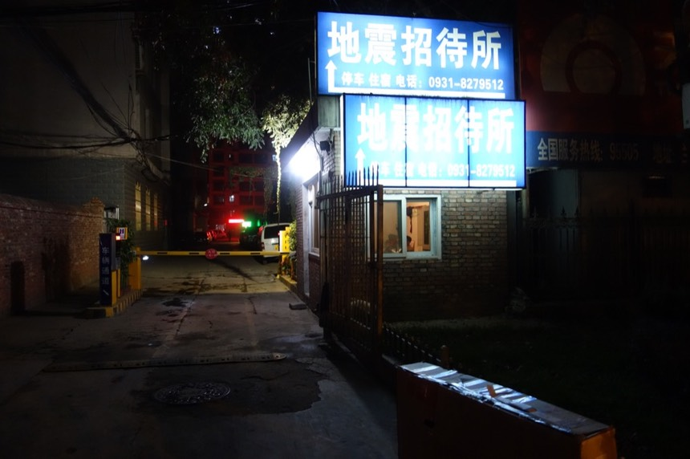
幸好有空房間，價錢也不貴（跟市區的高額住宿相比）
因為2人房是80元，3人房是90元。我印象中一直停留在多人房是只占一個床位，其他的床位可能會睡別人。像是通鋪的概念？
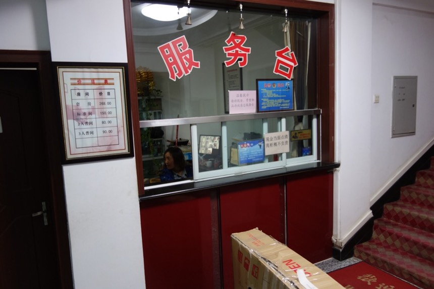
所以順口問了，為什麼3人房還比較貴？這樣的傻問題。
實際上整間房間都是我一個人睡，超大的三人房。本來還想說等一下要在一樓大廳組合單車，我真是完全多慮了。
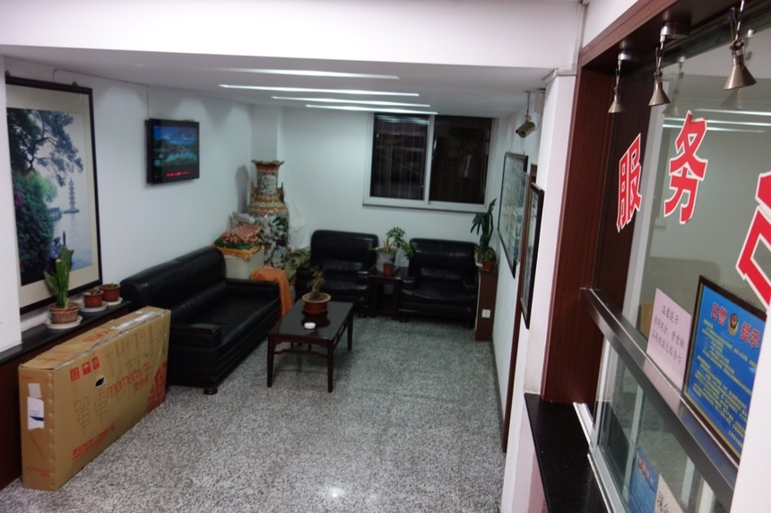
紙箱還能拿進房間毫無問題
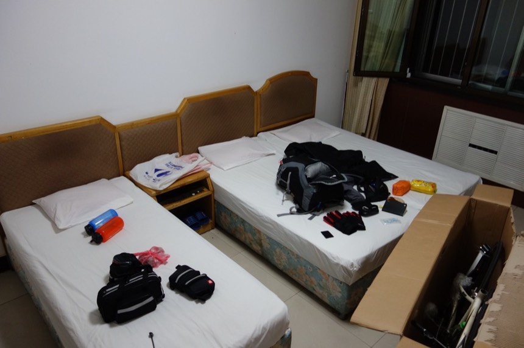
在正式開工組合之前，先去門口的小店買兩包泡麵。
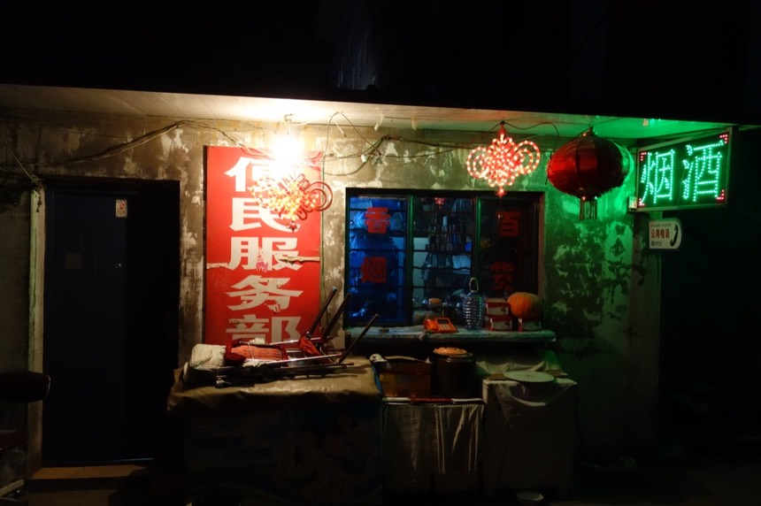
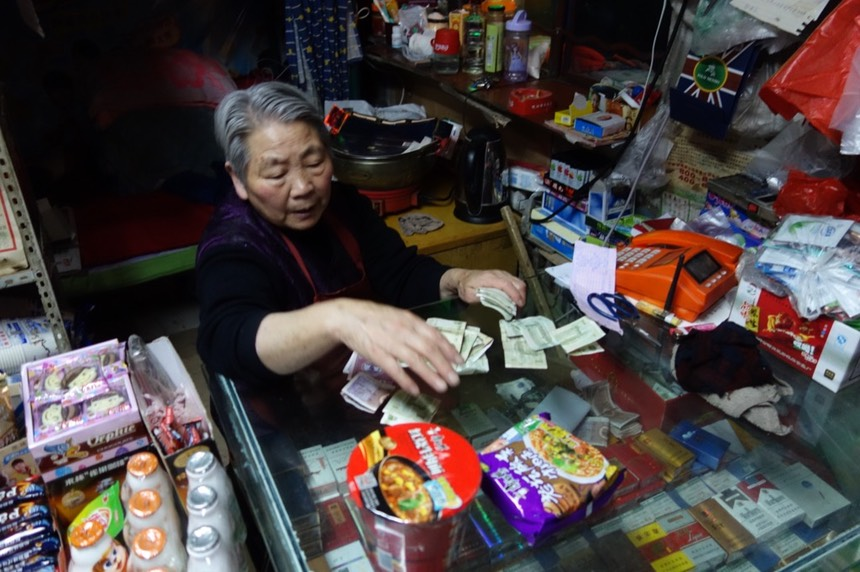
買泡麵的時候還感覺不太出來這幾年大陸物價的高漲，等過幾天開始在其他地方吃喝住宿的時候，
就驚覺才短短6年時間，這物價已經漲了3倍有餘，但台灣並沒有追上這樣的成長。
雖說物價並不會真的高到無法旅行，只是原本規劃一天50人民幣的預算，在2013年的中國，已經越來越困難。
用房間的水壺燒熱水（我喜歡電熱壺，也喜歡比較老派的招待所，會先燒好一壺一壺的熱水壺，個有好處）
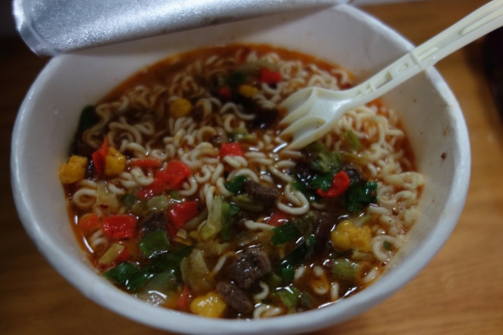
沒什麼廣告意圖，畢竟在大陸很難買到不是這個牌子，這款口味的泡麵，裡面還有蛋（黃黃的就是）感覺挺厲害。
邊吃晚餐邊組合小喵
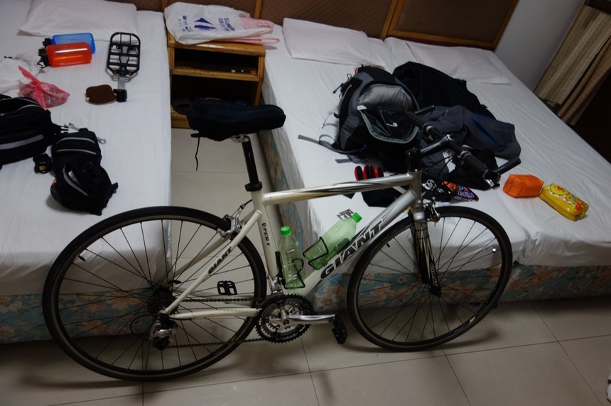
雖然費了點功夫，花一個半小時才弄好（比我預期的久多了！我想說大概20分鐘就可以搞定）
但大致上沒什麼問題 一切都很合拍，也研究出了怎麼把後背包以前傾斜的方式綁在貨架上。
這樣我就能感覺到後背包的存在，也不會太礙事妨礙騎車，一開始想說可以後背/ 貨架並著使用。
但這麼一綁上去，下次拿下來已經是將近10天之後的事情。
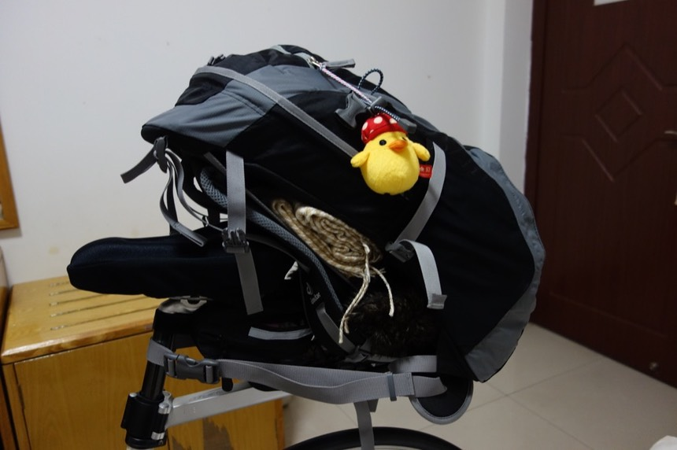
不是標準邊（內有廁所，衛浴），外面也沒有沖澡的地方（其實有，但是上鎖）在房內簡單擦過澡後，11點就寢。
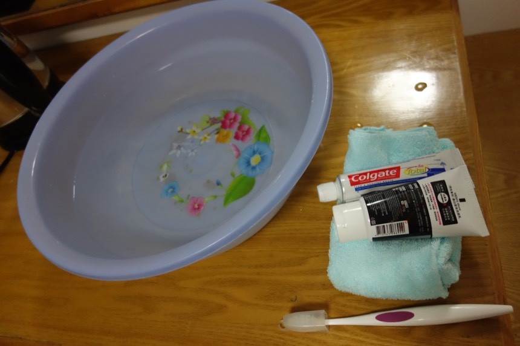
電熱壺燒熱水，洗臉盆裝冷水，混著之後就可以擦澡，洗臉跟刷牙，基於方便性，還是去洗手台好用的多。
明天就要開始騎車了，闊別了6年多的蘭州，並沒有太多時間可以去回味，
也許就在明天車水馬龍的路上，也許還能看到些記憶中的角落。
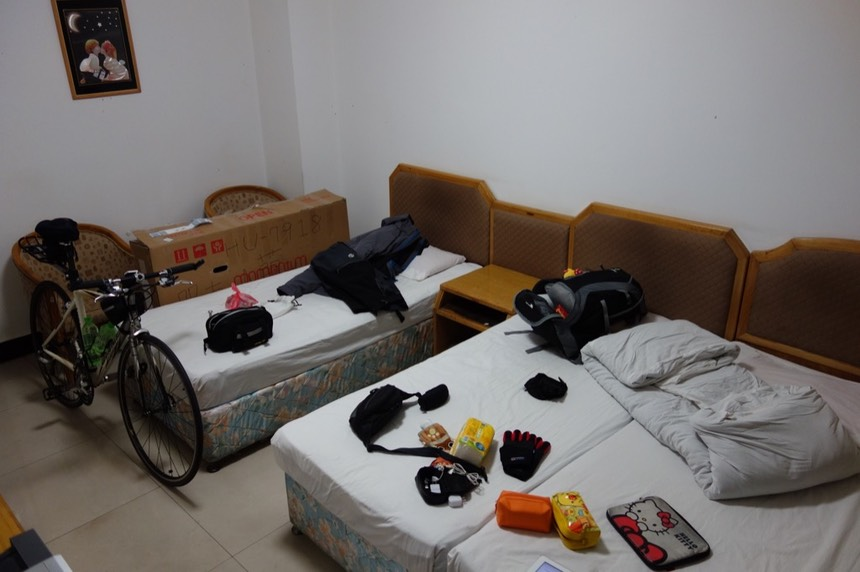
ps.今天還很假掰的洗了一點也不髒的衣服...也好，證實一下衣服是快乾型的。因為衣服實在一點也不髒，但我卻洗了它。
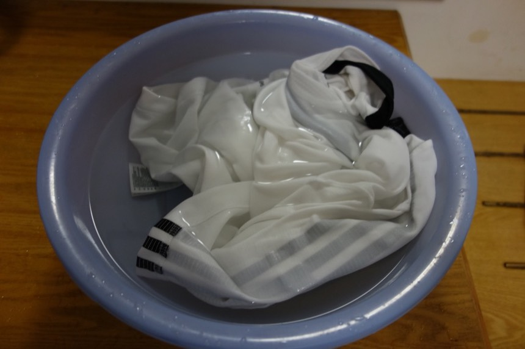
今日花費
30 機場大巴
4 晚餐 碗麵
2.5 晚餐 袋麵
90 住宿 地震招待所三人房
----
126.5